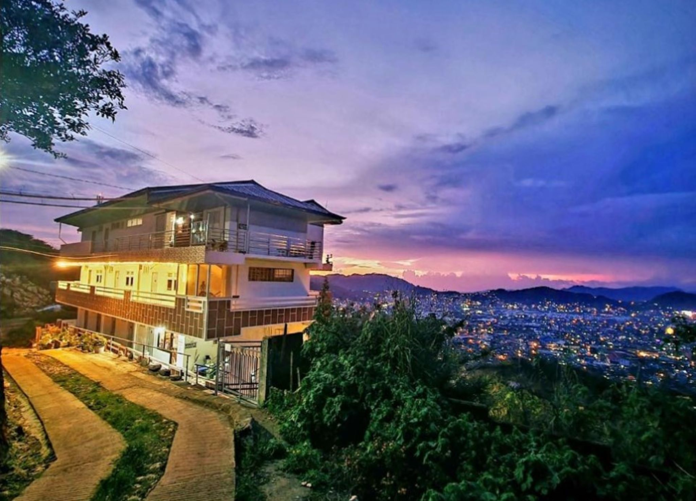
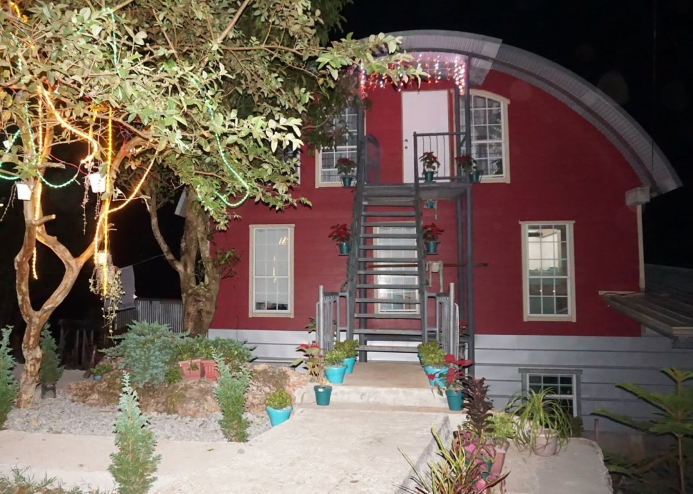
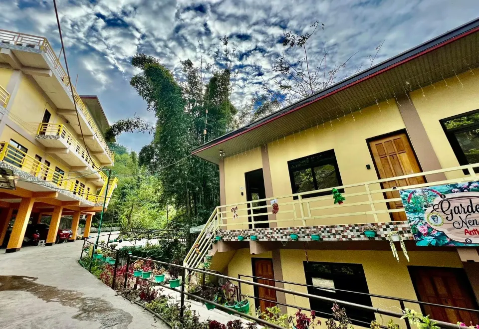

Discover the charm of La Trinidad Homestay, nestled in the picturesque landscapes of Benguet. This cozy hotel offers a warm retreat, where guests can immerse themselves in the cultural richness of La Trinidad while enjoying comfortable accommodations and personalized hospitality.
Finding A Cozy Place To Stay?
Hotels

La Trinidad Homestay
Wanay's Rocky Mountain Homestay
The Red Barn Staycation
Garden nén Ines Anthurium Garden & Guest House
La Trinidad Homestay
Wanay's Rocky Mountain Homestay
Perched amidst the breathtaking peaks of La Trinidad, Wanay's Rocky Mountain Homestay offers a tranquil escape with panoramic views of the scenic landscapes. With cozy accommodations and personalized service, guests can unwind in this mountain retreat, making it an ideal haven for those seeking serenity in the heart of Benguet.
The Red Barn Staycation
Experience the rustic charm of The Red Barn Staycation in the heart of La Trinidad, Benguet. This boutique hotel combines modern comfort with countryside aesthetics, offering guests a unique stay amidst lush surroundings, creating a perfect retreat in the scenic beauty of Benguet.
Garden nén Ines Anthurium Garden & Guest House
Nestled within the serene beauty of La Trinidad, the Garden nén Ines Anthurium Garden & Guest House is a haven of tranquility. Surrounded by vibrant anthurium blooms, this charming hotel provides a peaceful retreat where guests can unwind in comfortable accommodations and embrace the lush ambiance of Benguet.